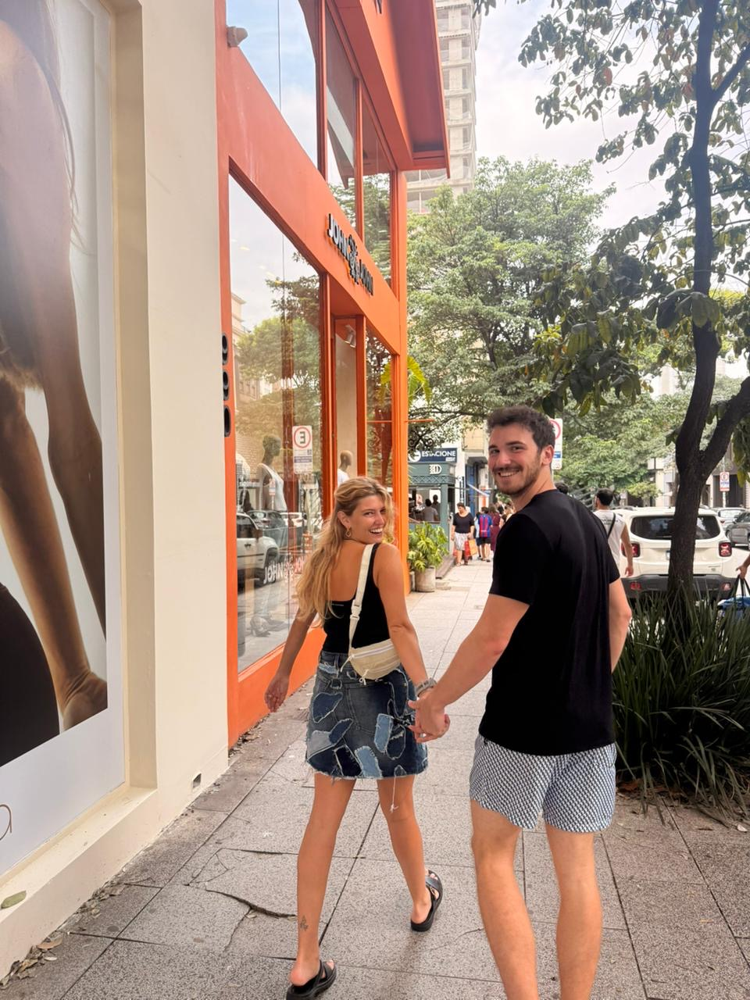
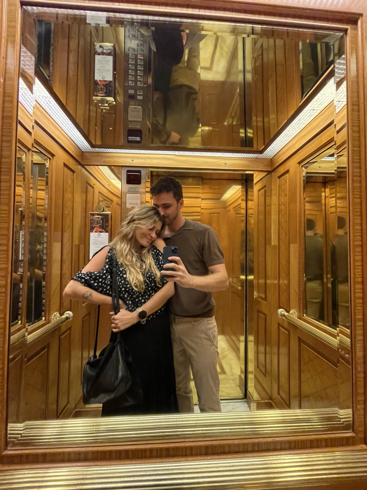
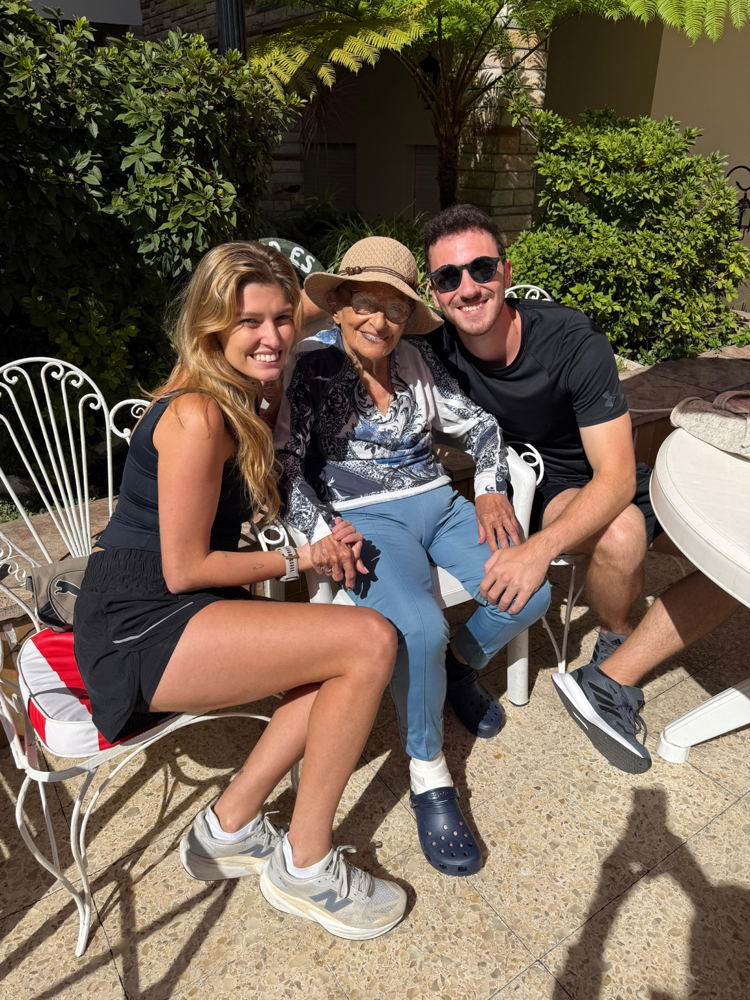

Buenos Aires
Nossa primeira aventura internacional.
Muitas caminhadas. Muito vinho. Muitas fotos.
E nenhum momento em que eu não estivesse feliz por estar ali contigo.

Um Ano
Algumas músicas a gente escuta. Outras acabam virando parte da memória.
Buenos Aires
Xangri-lá
Bento
Em construção
Marina,
É engraçado pensar que, antes de te conhecer, eu já tinha meus planos, minha rotina e minhas ideias de como as coisas seriam.
E então você apareceu.
Não de um jeito que virou tudo de cabeça para baixo. Mas de um jeito muito melhor.
Você foi ocupando espaço aos poucos.
Nas conversas. Nos cafés. Nas viagens. Nos domingos.
Quando percebi, já não imaginava muitas coisas sem pensar em você junto.
As cidades ficaram mais interessantes. As viagens mais divertidas. E os dias comuns mais especiais.
Porque passaram a ser compartilhados contigo.
E essa continua sendo uma das minhas coisas favoritas sobre você.
Nossa primeira aventura internacional.
Muitas caminhadas. Muito vinho. Muitas fotos.
E nenhum momento em que eu não estivesse feliz por estar ali contigo.



Um daqueles lugares que parecem cena de filme.
E por sorte nós estávamos nele juntos.

 Domingos comuns
Domingos comuns
 Pós corrida
Pós corrida
 Prioridades alinhadas
Prioridades alinhadas

Algumas partes da nossa história têm quatro patas.

E personalidade suficiente para dominar a casa inteira.

Algumas pessoas merecem um espaço reservado nas nossas melhores lembranças.
Julho 2026
Reservado para novas histórias.Setembro 2026
Reservado para novas histórias.Quando olho para trás, gosto de tudo que construímos até aqui.
Mas o que mais me anima é olhar para frente.
Ainda temos viagens para fazer. Fotos para tirar. Lugares para descobrir.
Em alguns meses estaremos no Chile. Depois no Rio.
Mas para ser sincero: nunca foi sobre os lugares.
O que faz cada viagem valer a pena é dividir ela contigo.
Espero continuar encontrando novos caminhos contigo.